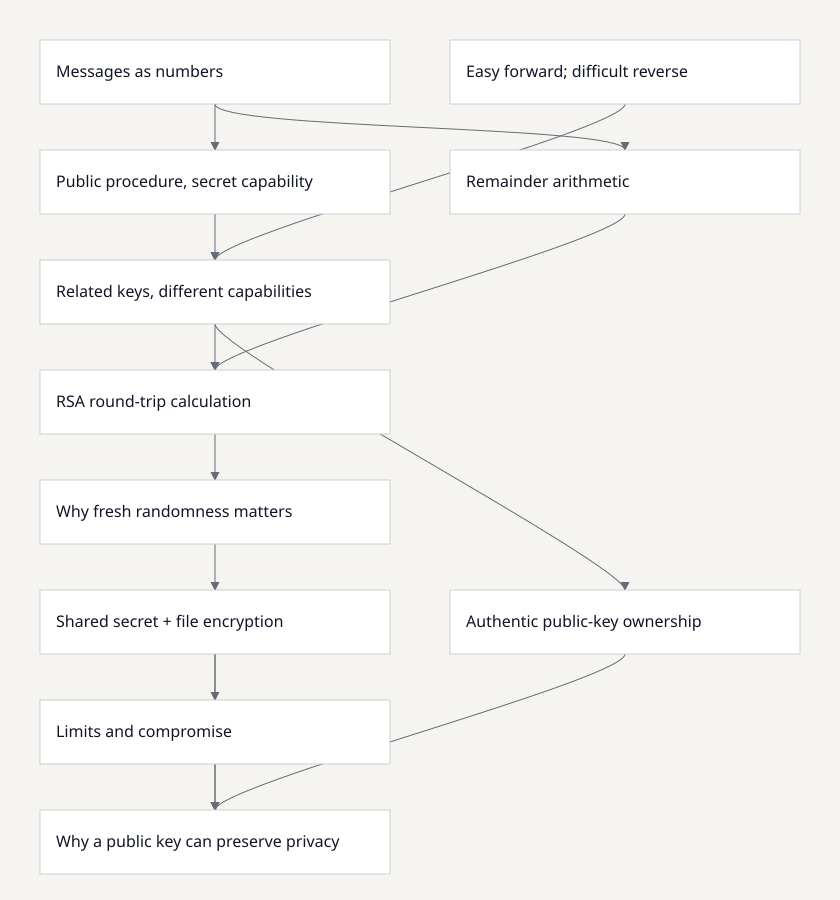

Arrows point from a prerequisite to the concept that requires it.

Files are bits; groups can be interpreted as integers without hiding them.
The procedure and encryption key may be public; the decryption capability must remain infeasible to recover.
Multiplication is efficient; recovering large hidden factors is believed hard. RSA inversion is not proven equivalent to factoring.
Modulo retains the remainder after division; powers can be evaluated by repeated squaring and reduction.
The public exponent and product permit forward arithmetic; the secret factors permit calculation of a matching private exponent.
Encrypt with exponent 17 modulo 2773; decrypt with exponent 157. Their product is 2668+1, giving the inverse relation.
A deterministic public encryption lets an observer encrypt candidate messages and compare. OAEP encodes with fresh randomness before RSA.
A public-key mechanism produces a shared secret and public encapsulation; derived symmetric keys protect the file.
A key must be authenticated through already trusted information; substitution encrypts to the attacker.
Base HPKE lacks sender identity authentication; recipient key compromise reveals old ciphertexts; plaintext length is not hidden.
Forward and reverse computations have different costs without the private information; complete randomized schemes and authentic keys preserve that distinction.